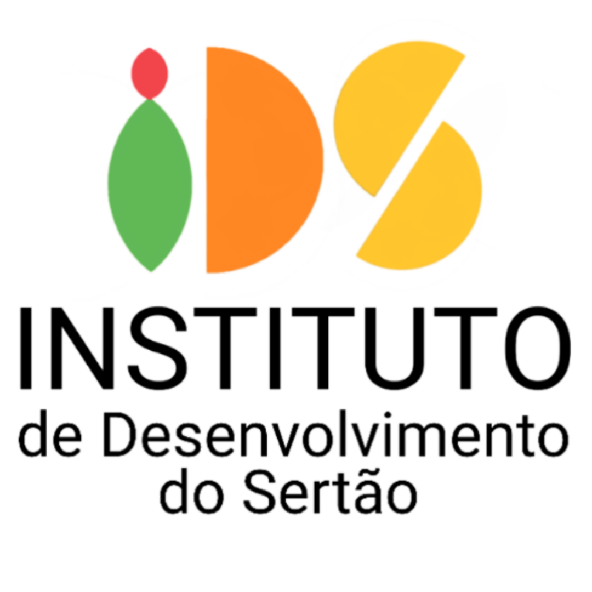

Transformando o sertão em um futuro mais inclusivo e próspero
Apresentação
Instituto de Desenvolvimento do Sertão (IDS)
O Instituto de Desenvolvimento do Sertão (IDS), anteriormente conhecido como AMBE, foi fundado em 2002 com a missão de promover o desenvolvimento da região sertaneja. Em 2024, o nome foi alterado para refletir melhor a amplitude de sua atuação e seu compromisso com o desenvolvimento social e cultural do sertão.
Ao longo dos anos, o IDS se destacou pela realização de diversos projetos, impactando positivamente comunidades locais e promovendo mudanças nas áreas:
- Esportiva: iniciativas para fomentar o esporte e proporcionar oportunidades para jovens talentos.
- Social: ações voltadas para inclusão e melhoria da qualidade de vida da população local.
- Cultural: preservação e valorização das tradições e identidades culturais do sertão.
- Educativa: programas educacionais para capacitação de professores e recursos para escolas da região.